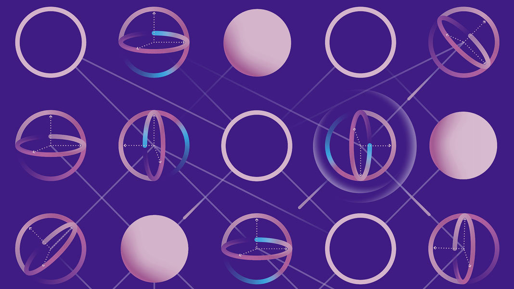

What is a Quantum Computer?
What is a Quantum Computer?¶

Remember from the video, we spoke about all those cool quantum behaviours that classical objects can’t do?
Those quantum behaviours are:
Superposition
That’s when a quantum object can be in two different states at the same time. If a light-bulb was quantum, it would be able to be on and off at the same time.Interference
Interference is when a quantum object can add to another quantum object or cancel the other quantum object out. If a ball was quantum, it would be able to merge with another quantum ball and make a bigger ball. Or, it would merge the other quantum ball and disappear all together!Entanglement Entanglement is when two (or more) quantum objects are connected and behave in sync with the others, even when they are separated by an entire country!
So why can’t balls, light-bulbs and anything we can see, behave like quantum objects?
It’s because objects tend to show quantum behaviours only if they are really tiny.
These tiny quantum objects are too small for us to see without a very powerful microscope.
Our normal computers work by using something called bits. Bits are used to store information and do calculations.
But, bits behave in a classical way and do not show the interesting quantum behaviours that we’ve learnt.
For a Quantum computer, we need quantum bits or qubits for short. Qubits can do quantum things.
This means that a quantum computer would be able to do things that normal computers can’t: that’s quantum things!
They should be more powerful than our normal computers.
The only thing is… that our quantum computers do not yet have the number of qubits to be better than our normal computers, but one day they will!